Codio exercises
The results of my codio exercises.

The results of my codio exercises.
The compiler generates the stack smashing detected error in responce to its defence mechanism against buffer overflows. A buffer overvlof occurs when the user input exceeds the buffer capacity. As we can see in the code, the stack smashing detected error happens when a user provide more than 8 characters.
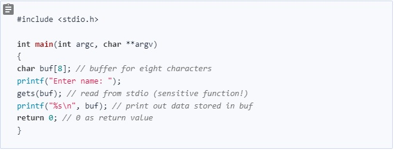
8 Characters 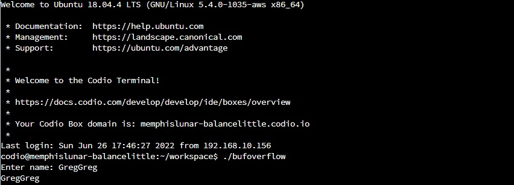
12 Characters 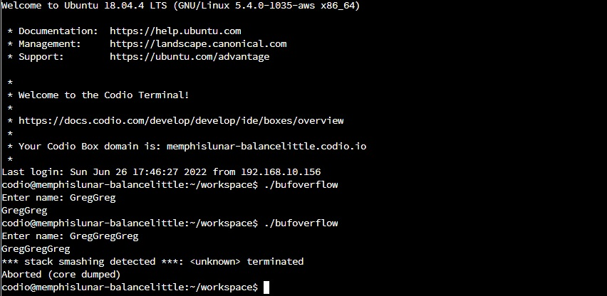
The first run of Overflow.py 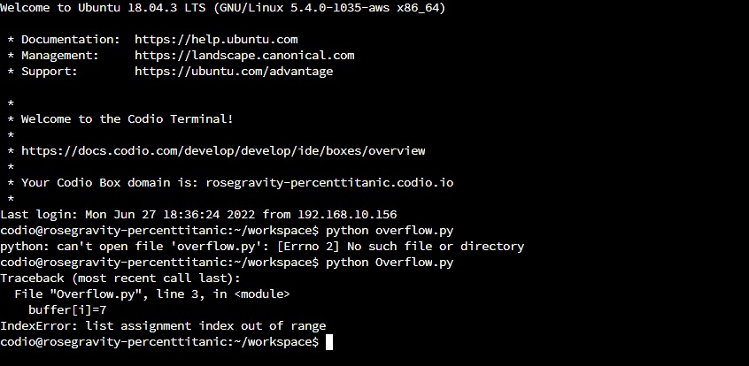
Pylist is a python library that helps to debug errors in the code. It can:
a) list errors after executing python code
b) support coding standards and helps to avoid potential errors and bugs.
c) suggest how the code can be improved / updated
d) offers details about code's complexity
In the exercise I got several errors:
a) Overflow.py:4:0: C0303: Trailing whitespace (trailing-whitespace) - there is whitespace between the end of a line and the newline.
b) Overflow.py:5:0: C0304: Final newline missing (missing-final-newline) - when the last line in a file is missing a newline.
c) Overflow.py:1:0: C0103: Module name "Overflow" doesn't conform to snake_case naming style (invalid-name) - is used when the name doesn’t conform to naming rules associated to its type (constant, variable, class…).
d) Overflow.py:1:0: C0114: Missing module docstring (missing-module-docstring) - it is used when a module has no docstring.
The second run of Overflow.py 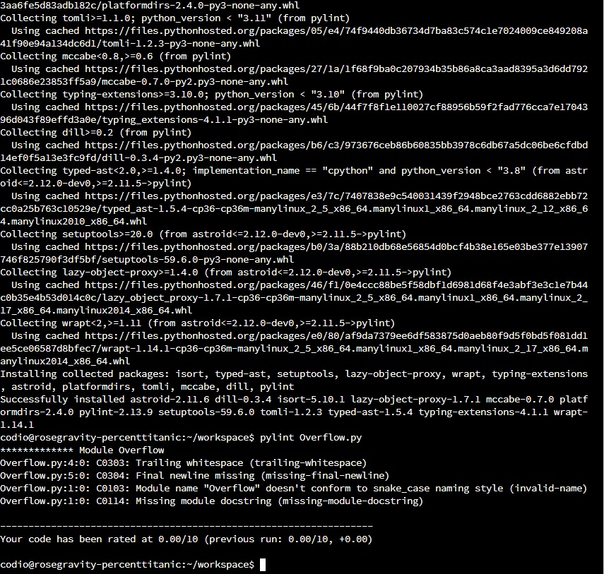
Solutions:
in the file Overflow.py:
1) line 4 there are 4 spaces - they should be removed.
2) there should be one additional empty line 6.
3) the name of the module should be lowercase ''overflow.py''
4) a docstring should be added.
After adding corrections. 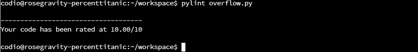
Q1.1: What happens when the code is run?
I was getting IndentationError: expected an indented block.
Q1.2:Can you modify this code for a more favourable outcome?
The file styleLine.py had incorrect tabs.
It was:
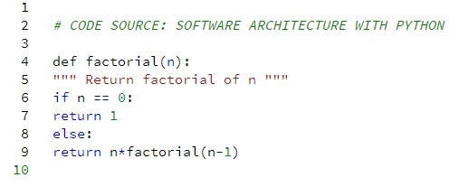
My corrections:
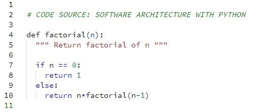
Q2: Run pylint on pylintTest.py. Review each of the code errors returned. Can you correct each of the errors identified by pylint? Before correcting the code errors, save the pylintTest.py file with a new name (it will be needed again in the next question).
My corrections:
Error 1: Missing parentheses in call to 'print'. Did you mean print(encoded)? I added parentheses for function print.
Error 2: NameError: name 'raw_input' is not defined. I deleted “raw_” from each input.
Q3:
metricTest.py:2:1: E265 block comment should start with '# '
it was: “#CODE SOURCE: SOFTWARE ARCHITECTURE WITH PYTHON “
my correction: “# CODE SOURCE: SOFTWARE ARCHITECTURE WITH PYTHON “
metricTest.py:2:48: W291 trailing whitespace
it was: “# CODE SOURCE: SOFTWARE ARCHITECTURE WITH PYTHON “
my correction: “# CODE SOURCE: SOFTWARE ARCHITECTURE WITH PYTHON“
metricTest.py:15:1: E302 expected 2 blank lines, found 1.
it was:
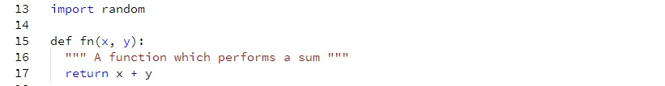
my corrections:
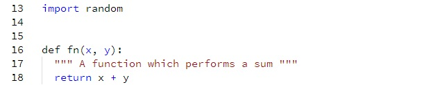
In many places there was an error: E111 indentation is not a multiple of 4
my solution: I went through all the file correcting indentations.
There was a few errors: E302 expected 2 blank lines, found 1
my solution: I had to add one additional line between either two functions or two classes or a function and a class.
metricTest.py:22:5: E128 continuation line under-indented for visual indent
it was:
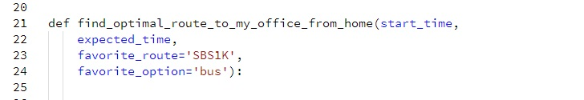
my correction:
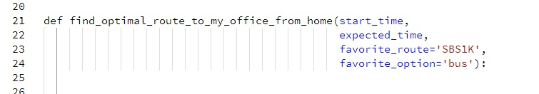
This error repeated in a few lines in the cod and I correct them all.
metricTest.py:27:5: E303 too many blank lines (2)
it was:
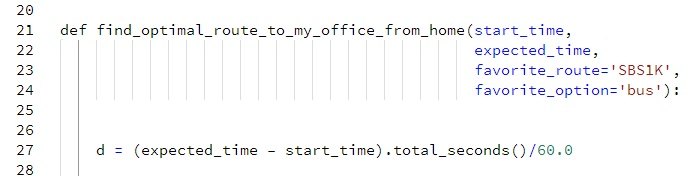
my correction:

This type of mistake repeated a few times, and I corrected them all.
metricTest.py:26:24: E999 SyntaxError: invalid syntax
it was:
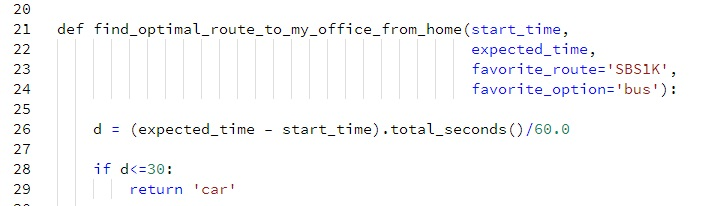
my correction:
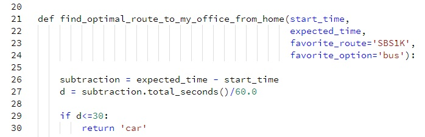
metricTest.py:29:9: E225 missing whitespace around operator
it was: “if d<=30:”
my correction: “if d <= 30:”
metricTest.py:36:80: E501 line too long (84 > 79 characters)
it was: “# If d>45 there are a combination of options Writing Modifiable and Readable Code” - everything in one line (more than 80 char in one line)
my correction:
“# If d>45 there are a combination of optionsWriting
# Modifiable and Readable Code”
I divided the comment into two lines (each below 80 char).
metricTest.py:42:31: E231 missing whitespace after ','
it was: “return ('bus:335E','bus:connector')”
my correction: “return ('bus:335E', 'bus:connector')”
This error repeated in several places in the code, and I corrected them all.
metricTest.py:79:13: E701 multiple statements on one line (colon)
it was:
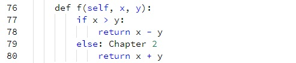
my correction:
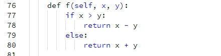
metricTest.py:87:30: W292 no newline at end of file
it was: no new line at the end of the file.
my correction: I added a new line at the end of the file.
This error repeated in several places in the code, and I corrected them all.
after all my corrections:
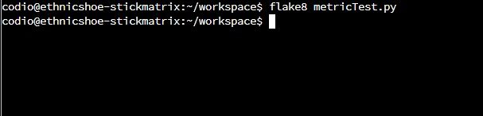
Q4.1: Run mccabe on sums.py. What is the result?
The result is:
("4:0: 'test_sum'", 1)
('If 7', 2)
Q4.2: Run mccabe on sums2.py. What is the result?
The result is:
("7:0: 'test_sum_tuple'", 1)
("4:0: 'test_sum'", 1)
('If 10', 2)
What are the contributors to the cyclomatic complexity in each piece of code?
For the sums.py is 1 and for the sums2.py is 2.